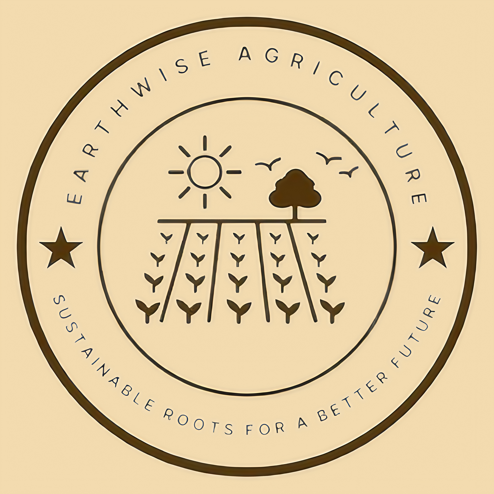

Nossa Missão
Somos uma organização dedicada a transformar vidas através da agricultura sustentável e do
desenvolvimento social, promovendo um futuro melhor para todos. Somos uma empresa comprometida com um
futuro mais sustentável e equilibrado, dedicada
a transformar o setor agrícola por meio de soluções inovadoras que promovem o uso responsável dos
recursos naturais. Nosso objetivo é oferecer alternativas eficazes e conscientes para o desenvolvimento
de produtos agrícolas, respeitando
o meio ambiente e buscando a melhoria contínua da qualidade de vida das pessoas e das comunidades.
Acreditamos que a agricultura pode ser uma grande aliada na preservação ambiental, e para isso,
trabalhamos intensivamente para incentivar
práticas agrícolas que atendam as necessidades do presente sem comprometer os próximos. Através do apoio
à implementação de selos de certificação sustentáveis, buscamos promover a transparência, a
rastreabilidade e a valorização de produtos
que respeitam altos padrões ambientais e sociais. Nosso compromisso vai além da comercialização de
produtos: buscamos educar e conscientizar os produtores sobre as melhores práticas, oferecendo as
ferramentas necessárias para que possam
alcançar a certificação sustentável de maneira acessível e eficaz. O selo que criamos é um símbolo de
qualidade e responsabilidade, representando o compromisso com a sustentabilidade em cada etapa da
produção. Acreditamos que, ao oferecer
alternativas sustentáveis e ao incentivar uma produção mais responsável, podemos contribuir para a
construção de um sistema agrícola mais justo, eficiente e alinhado com as demandas do mundo
contemporâneo. A sustentabilidade não é apenas
uma escolha, mas uma necessidade urgente para garantir que o futuro da agricultura seja tanto produtivo
quanto responsável. Nossa missão é ser um elo entre produtores, consumidores e o meio ambiente, trazendo
soluções que gerem impacto
positivo e transformação no campo, para o planeta e para todos os envolvidos.

Nosso Selo
Nosso selo é muito mais do que um simples distintivo de qualidade - ele é um símbolo de
compromisso com a
sustentabilidade e a gestão do meio ambiente e de responsabilidade social no setor agrícola. Através
dele, buscamos assegurar que os
produtos que chegam no mercado atendam a rigorosos padrões de produção que equilibram as necessidades de
rentabilidade com a preservação ambiental.
O selo é resultado de um processo de certificação detalhado e transparente, que
garante que as práticas
agrícolas adotadas pelos produtores respeitem critérios essenciais como o uso consciente da água, o
manejo adequado do solo, a redução
do uso de produtos químicos e a preservação da biodiversidade local. Certificamos apenas produtores que,
além disso, ele assegura que a produção não comprometa a biodiversidade local e é conduzida de maneira
ética e responsável.
Para os produtores, o alcance do nosso selo significa um compromisso com a
melhoria contínua e o
desenvolvimento de um caminho para a inovação no mercado agrícola. Este é um processo participativo que
culmina em um movimento crescente que
transforma a produção agrícola nos desafios ambientais e sociais do nosso tempo, ao mesmo tempo em que
se destacam no mercado por sua responsabilidade e transparência.
Como Obter Nosso Selo
Carta de Compromisso com o Consumidor
Prezado(a) Cliente,
Em primeiro lugar, gostaríamos de expressar nossa gratidão pela confiança que você deposita em nossa empresa
e em nossos produtos. É com grande compromisso e responsabilidade que nos dirigimos a você para reafirmar
nosso empenho em oferecer produtos
agrícolas de alta qualidade, produzidos com respeito ao meio ambiente e às comunidades ao redor.
Nossa missão vai além da simples comercialização: trabalhamos incessantemente para garantir que cada produto
que leva nosso nome não só atenda aos mais altos padrões de qualidade, mas também esteja alinhado com
práticas sustentáveis que promovem
a preservação ambiental e o bem-estar social.
Cada produto que oferecemos passa por rigorosos processos de controle de qualidade, desde a seleção da
matéria-prima até a entrega final. Nosso compromisso com a qualidade se reflete em nossa busca contínua pela
inovação e aperfeiçoamento, utilizando
tecnologias que garantem um alto padrão de produção, sem abrir mão da responsabilidade ambiental.
Adotamos práticas agrícolas que respeitam o equilíbrio ecológico, utilizando recursos naturais de maneira
responsável e sem comprometer as necessidades das gerações futuras. Nossos fornecedores e produtores
parceiros seguem normas que asseguram
o uso consciente da água, do solo e dos recursos energéticos, além de promoverem a biodiversidade e a
conservação dos ecossistemas.
Através do nosso selo de certificação sustentável, garantimos que cada produto comercializado por nossa
empresa segue critérios rigorosos de sustentabilidade, ética e responsabilidade social. Esse selo é a
garantia de que você está adquirindo
produtos que têm um impacto positivo tanto no meio ambiente quanto nas comunidades que participam do
processo produtivo
Acreditamos que a transparência é fundamental para a confiança mútua. Por isso, nos comprometemos a manter
você informado sobre os processos que envolvem a produção, rastreabilidade e certificação de nossos
produtos. Estamos constantemente avaliando
e aprimorando nossas práticas para garantir que continuemos a oferecer soluções agrícolas mais eficientes,
inovadoras e, acima de tudo, sustentáveis.
Você, como nosso cliente, faz parte de um movimento que acredita no poder da agricultura responsável e no
impacto positivo das escolhas conscientes. Juntos, podemos contribuir para um futuro mais verde, justo e
equilibrado.
Agradecemos imensamente por ser parte desse compromisso e por acreditar que, através da qualidade e da
sustentabilidade, podemos construir um mundo melhor para todos.
Atenciosamente,
Earthwise Agriculture.